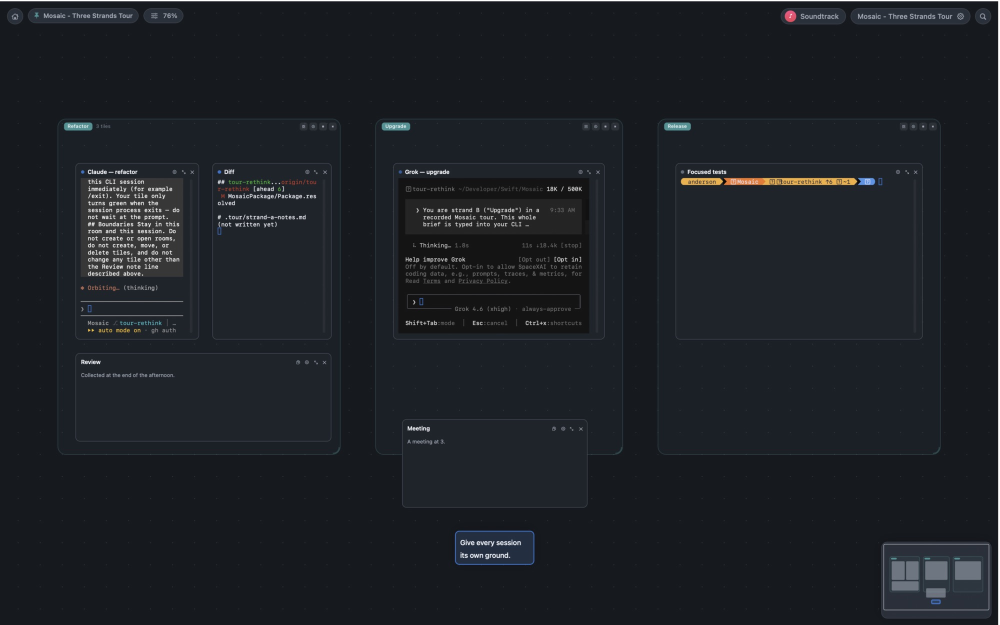
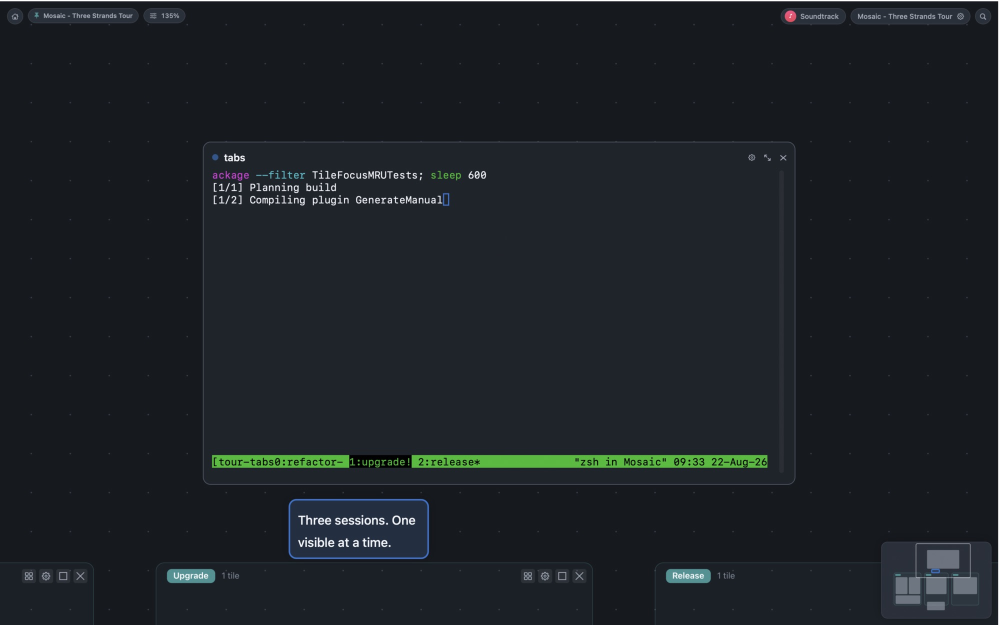
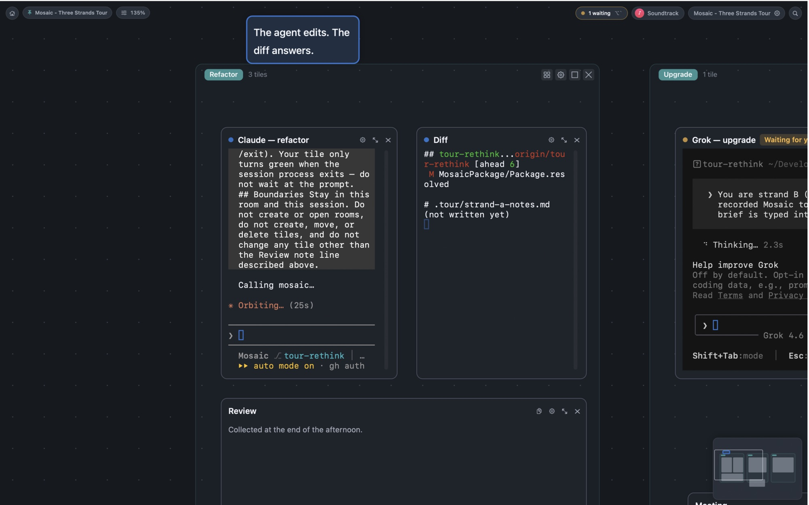
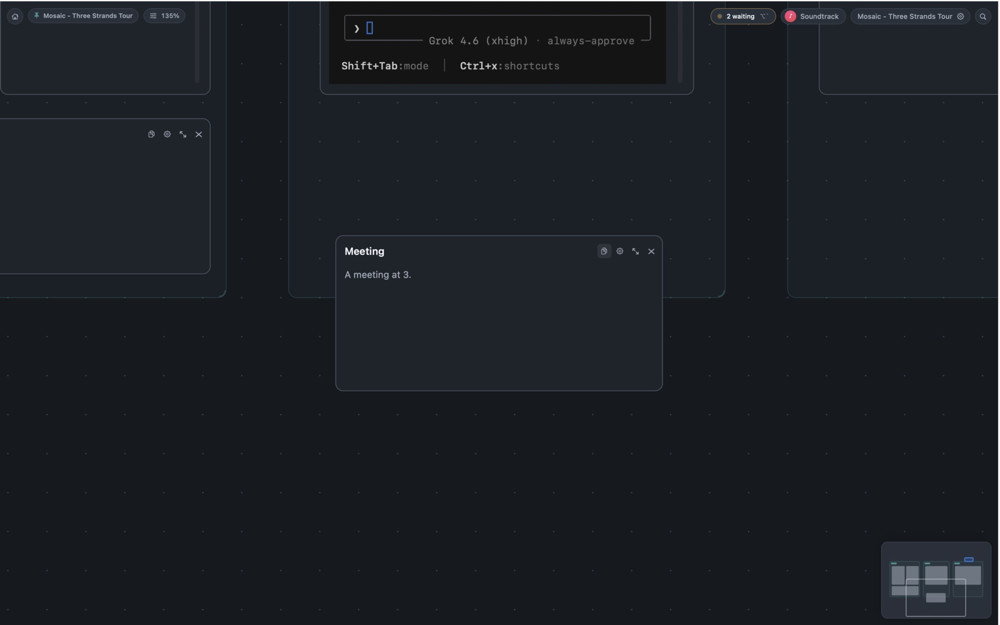
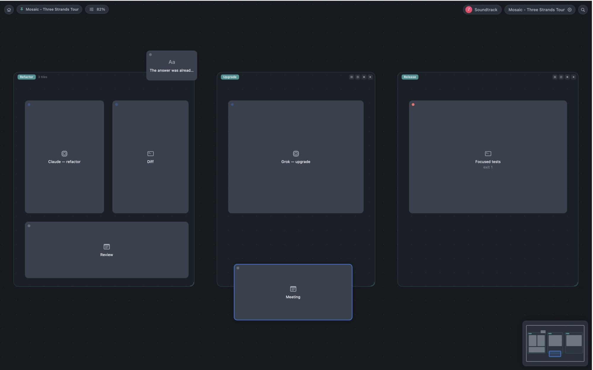

A spatial workspace for the afternoon that will not stay on one task
Many threads.
One surface.
Tabs hide everything but one. Mosaic lays the work out so nothing has to wait off-screen — session, diff, and notes on the same ground.

The usual surface
Three sessions.
One visible at a time.
The bell rings in a tab you are not looking at. Output scrolls away. Switching is guessing which one was waiting, and for how long.

Beside the question
The agent edits.
The diff answers.
Diff, session, and notes live on the same strand. You do not hunt scrollback for the thing that was already next to the prompt.

See who is waiting.
A bell you missed in another tab is a pill you can click. Jump to the oldest ask. The count is every tile that needs you, not the one currently in frame.

Without leaving
Look around.
Everything still runs.
Hold ⌥O to peek the whole room. Status stays readable when the pixels recede. One done, one failed, seen without moving.

Nothing lost.
A native macOS workspace, not a browser tab. The app is local-first and still in private preview — there is no public download yet.